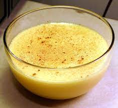

Custard Recipe

Description
Custard is a decadent dessert made with eggs, milk, and sugar. Eggs are responsible for custard's thick and velvety texture, but some recipes (such as this one) call for thickeners such as cornstarch or arrowroot for extra richess.
Ingredients
- Milk
- Butter
- Vanilla
- Eggs
- Sugar
- Cornstarch
Steps
- Bring the first three ingredients to a simmer. Remove from heat before it boils.
- Whisk the remaining ingredients in a separate bowl.
- Over low heat, slowly whisk the egg mixture into the milk mixture